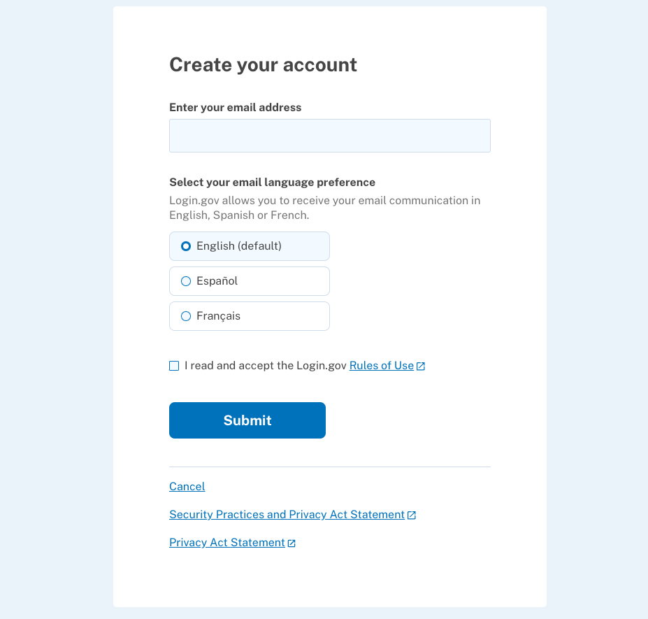
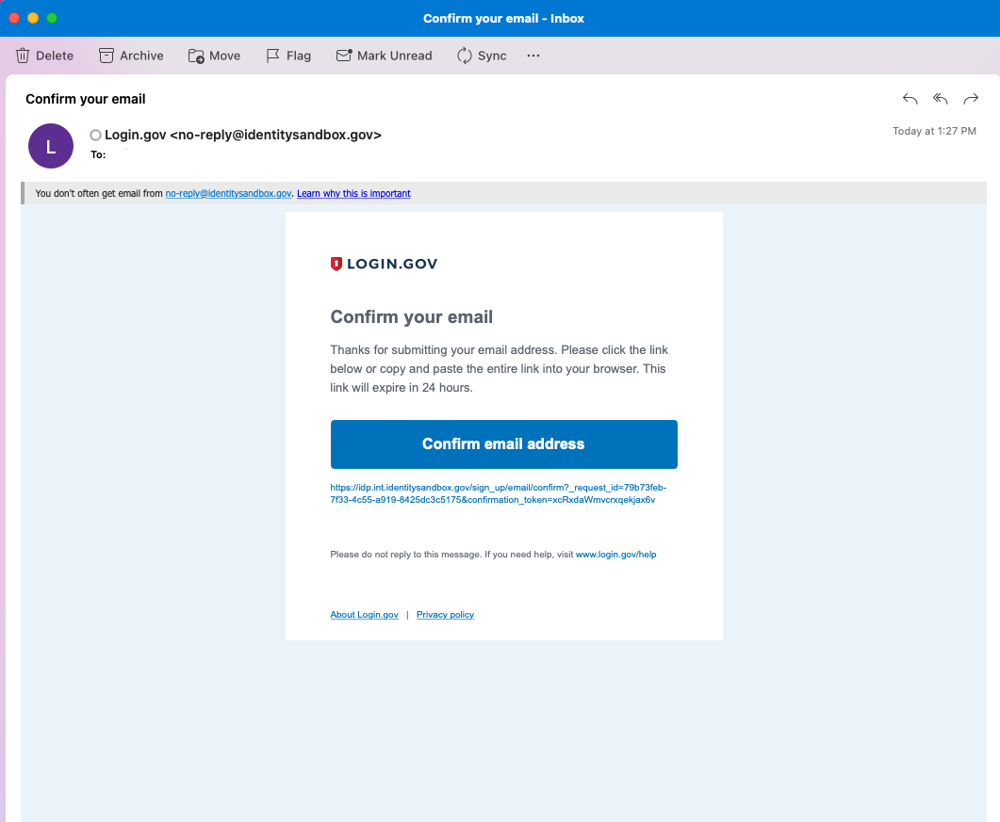
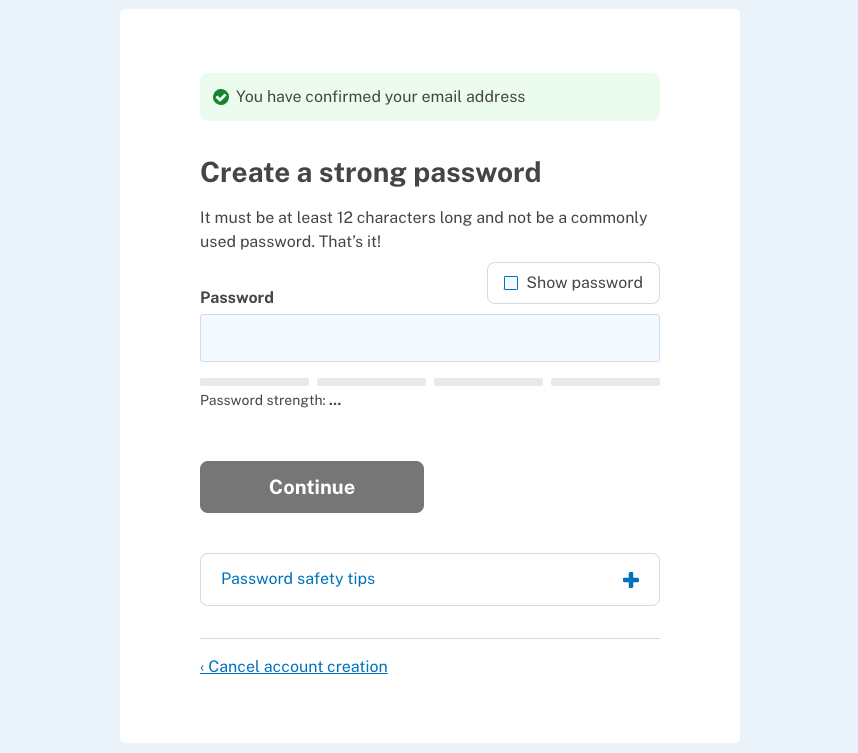
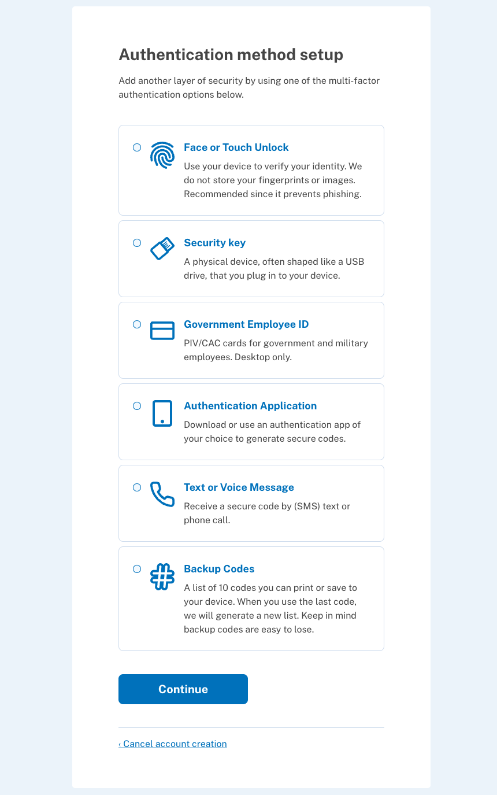
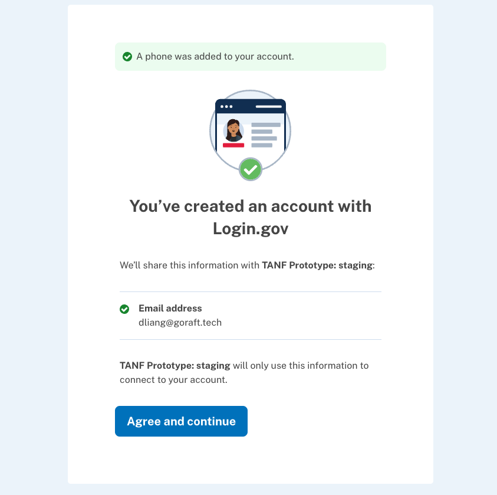

Create a New Login.gov Account
Follow these steps to get started with Create a new Login.gov account to sign into the TANF Data Portal (TDP).
-
Sign into the TANF Data Portal
Begin here: Visit the TANF Data Portal and select 'Sign in with login.gov for grantees'
-
Create an Account
Please select 'Create an account' button below the email and password fields:

-
Create your Account
- Enter your work email address to begin
- Select your email language preference
- Review the rules of use and when ready, select 'Submit'
 -
Confirm your Email Address
Check your email inbox for a message from Login.gov and select 'Confirm email address'. This will take you back to the Login.gov website.
 -
Create your Password
Create your Login.gov password. Passwords must be at least 12 characters. That’s it! There are no other restrictions. You can even use more than one word with spaces to get to 12 characters. Try using a phrase or a series of words that only you recognize. Your Login.gov password should be different from passwords you use for other accounts such as your bank account or email. Using the same password for many accounts makes identity theft easier.
 -
Setup Second Layer of Security
As an added layer of protection, Login.gov requires you to set up a secondary authentication method to keep your account secure. This is referred to as two-factor authentication (2FA). While we only require one secondary authentication method, we encourage you to add two methods to your account. That way you will have a backup if you lose access to your primary authentication method. Learn more about each authentication option to choose the one that is right for you.
 -
You've Created an Account with Login.gov
Success! Once you have authenticated, you have created your Login.gov account. You can add additional authentication methods, email addresses or update your information on the Login.gov account page. Click “Agree and continue”
 -
Log into the TANF Data Portal
Log into the TANF Data Portal with the previously set up authentication method to continue
-
Request Access
Request access to the TANF Data Portal.
- Enter First Name
- Enter Last Name
- Select your Associated State, Tribe or Territory

-
Request Submitted
Your request for access is being reviewed by an OFA admin. You will receive an email when access has been granted. Please allow up to 1 business day for a response.

-
Approved for the TANF Data Portal
You are approved to begin working in the TANF Data Portal.
{kind=link}
{kind=link}
{kind=link}
{kind=link}
{kind=link}
{kind=link}
{kind=link}